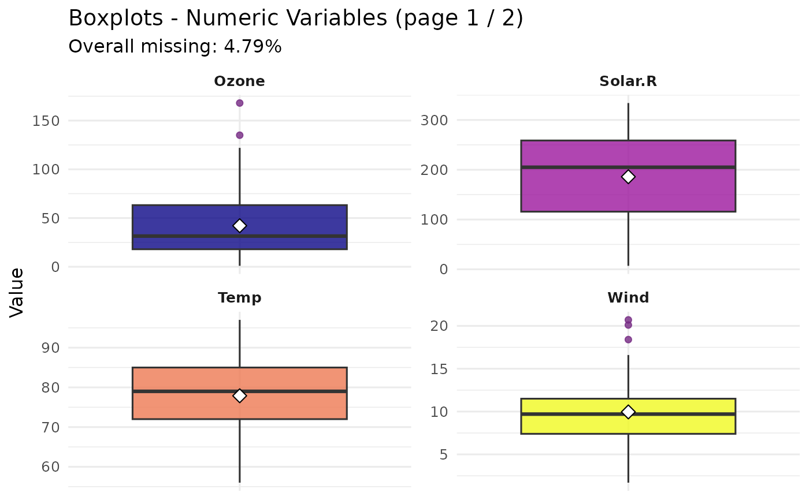
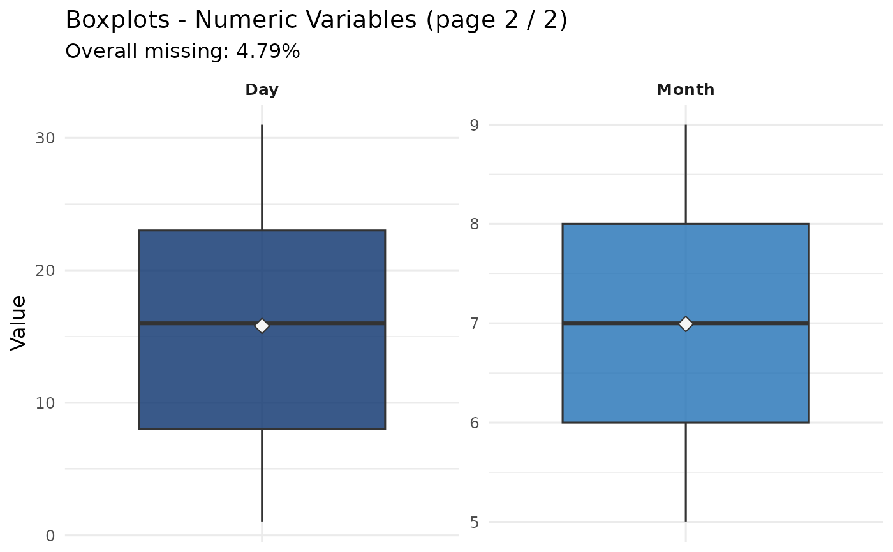

Computes a per-variable missing-value summary table and draws boxplots
for every numeric column. Results are returned invisibly as a list so
they can be passed directly into handle_missing().
Value
An invisible list with elements:
summaryA
data.framewith columnsvariable,n_missing,pct_missing, andpct_missing_num.overall_pctOverall fraction of missing cells (numeric 0-1).
plotA
ggplotobject (boxplots), orNULL.dataThe original
datapassed in (unchanged).
Examples
data(airquality)
result <- missing_analysis(airquality)
#>
#> ============================================================
#> STEP 3/7 : Missing Value Analysis
#> ============================================================
#>
#> Rows : 153 | Cols: 6 | Total cells: 918
#> Missing : 4.79% (44 cells) | 2 / 6 cols affected
#> Action : DROP -- missing = 4.79% <= 5% threshold, safe to remove rows
#>
#> ------------------------------------------------------------
#> Missing per column
#> ------------------------------------------------------------
#> variable n_missing pct_missing
#> Ozone 37 24.18%
#> Solar.R 7 4.58%
#>


result$summary
#> variable n_missing pct_missing_num pct_missing
#> Ozone Ozone 37 0.24183007 24.18%
#> Solar.R Solar.R 7 0.04575163 4.58%
#> Wind Wind 0 0.00000000 0%
#> Temp Temp 0 0.00000000 0%
#> Month Month 0 0.00000000 0%
#> Day Day 0 0.00000000 0%